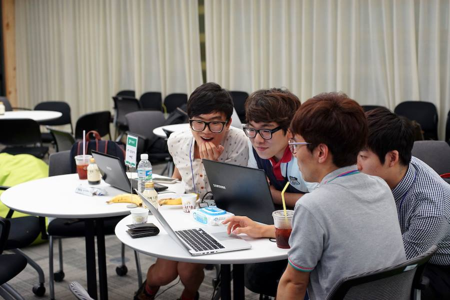
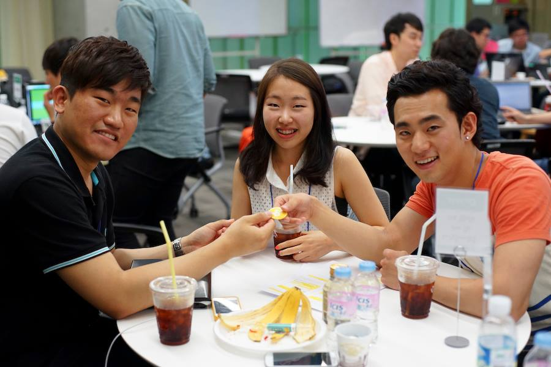
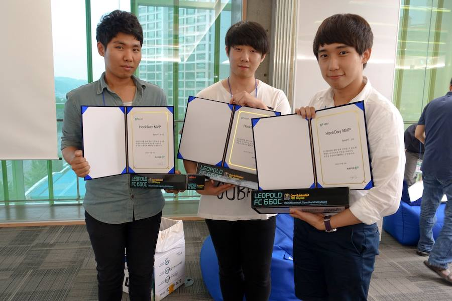
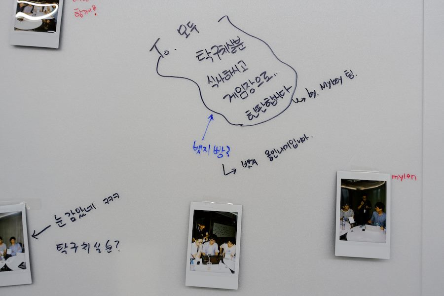
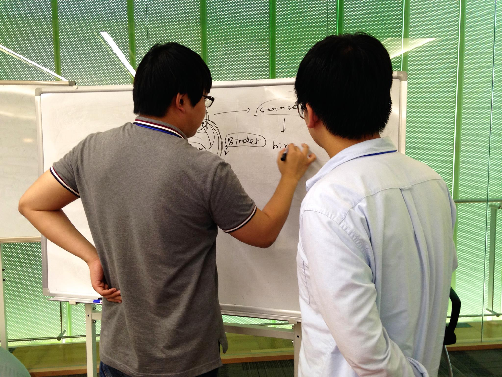
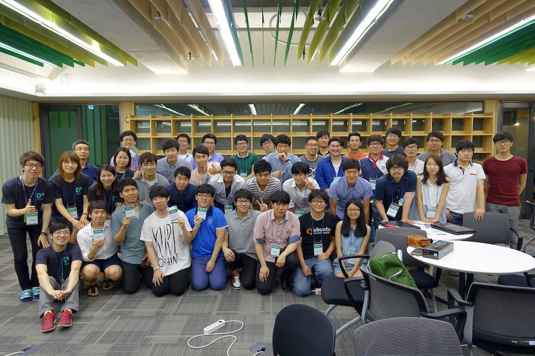
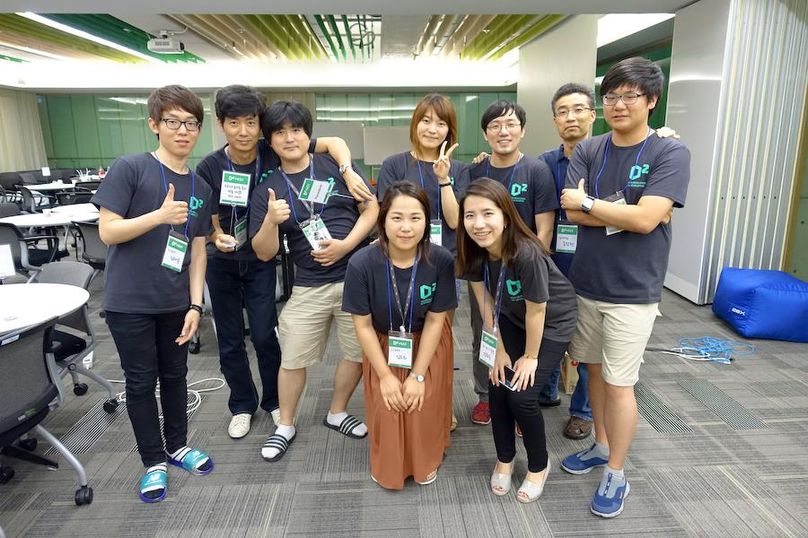

About Author

Insanehong
blog: http://insanehong.kr
twitter: @insanehong
github: insanehong.github.com
- NAVER Corporation, Front-End Engineer(2013~)
- Like Javascript, Dart, HTML5, CSS3,Responsive Web, Haroopress, Frends, Lean Startup, Open Source
- Hackrslab co-founder
- About me http://about.me/insanehong
About this Article
Date Released:
Sunday, July 20 2014 4:53 PMD2Fest HackDay 후기
지난 토요일(14.07.19) D2Fest HackDay 가 정자동 네이버 그린펙토리 에서 열렸다.
사실 토요일은 octoberskyjs 스터디가 있는 날이였지만
덕홍님. 죄송하지만 이번 주 토요일에 D2Fest Hackday 에 나와 주실수 있나요?
D2 를 총괄하고 계신 한용님이 보낸 이 낚시성 메세지를 덥썩 물어버린 한마리 어린 양으로써 행사에 참여한 후기를 남겨보려고 한다.
네트워킹을 하라
개인적으로 이번 행사에 참여하는 학생들이 얻어갔으면 하는 것중 하나가 학생들간 네트워킹을 통해 인맥을 넓혀 갔으면 하는 것이 였다.
학창시절을 줄곧 제주도에서만 보내온 나로서는 이런 네트워킹의 기회가 전혀 없었을 뿐더러 주위에 개발에 관심있던 학생도 거의 없었기 때문에 이런 행사에 참여 할수 있는 학생들이 부럽기도 하였고 좋은 기회라고 생각했다.
현업 개발자들 역시 개발자행사에 참여하게 되면 평소에 친하게 지내던 개발자분들의 소개 혹은 온라인을 통해서만 알던 개발자분들을 오프라인에서 만나 인사를 나누는 것이 다반사이다.

Gamification
이번 행사의 주 내용은 학생들이 본인의 프로젝트에서 해결해야 할 이슈들을 공개하고 이를 다른 팀과 협업하여 해결하는 것였다.
행사가 끝나면 각팀들의 협업을 트레킹하여 MVP 를 수상하였기 때문에 동기 유발이나 재미요소가 필요하다고 생각했다.
그리하여 Gamification 요소로 각 팀당 8개의 뱃지를 지급하고 도움을 받은 정도에 따라 뱃지를 나눠주게 끔 하고 남은 뱃지는 마이너스 요인으로 작용하는 규칙을 적용 하였다.
행사 중간 중간 뱃지를 교환하는 것을 지켜보고 있으니 나름 좋은 시도였던거 같다.

MVP 를 뽑아라
이번 행사에서 얼떨결에 심사를 맡게 되어 심사 시간에 다소 딱딱하게 들릴수 있는 질문들을 좀 하게 되었다.
중간에 발표를 끊고 핵심만 말해달라고 했던 것들은 좀 싸가지 없이 보였을수도 있지만 개인적으로 학생들이 핵심부분을 얘기하지 않고 두리뭉실한 대답만을 하여서 심사를 하기위해 필요한 정보를 얻어야 하는 사람으로선 시간을 아끼기 위해서는 어쩔수 없는 선택이였다. 그리고 뭐 내가 원래 그리 친절한 사람도 아니고 응?
뱃지 획득 수치가 높은 팀중에 MVP 를 받지 못한 팀도 있다. 특히 Re. Seoul 팀은 가장 많은 뱃지를 획득한 팀중 하나지만 MVP 를 받지 못했다.
개인적으로는 꽤 열정적인 팀이였는데 참 아쉬운 팀 중 하나다.
이번 행사 취지에 맞는 팀을 선정하는 것이 임무인 나에게 있어서의 심사기준은 많은 이슈를 해결해주는 것뿐만 아니라 본인들의 미쳐 생각하지 못한 부분을 이번 행사를 통해서 알게 되는 것 역시 중요한 포인트 였다.
즉, 본인들이 정말 해결하고 싶은 이슈를 등록했던지 혹은 최대한 많은 이슈 특히 정말 본인 팀 입장에서 도움을 받고 싶어하는 이슈들을 올린것 역시 가중치를 두어 심사 하였다.
신기한 것은 4명의 심사위원이 각자 선정한 MVP 후보가 모두 동일 하였다는 것이다. 그래서 특단의 조치를 내린 승현님의 판단으로 후보들 모두에게 수상하기로 결정 되어 수상팀과 부상품이 모두 2배가 되는 사태(?)가 발생하였다.

행사의 핵심은 MVP 을 노려라가 아니다.
처음에 애기 했듯이 이번 행사는 MVP 가 중요한 것이 아니였다. 학생들간의 네트워킹과 협업의 재미를 알아가는 것이다.
특히 이번 행사를 오프라인에서 온라인으로 옮기기만 하면 온라인상에서 오픈소스 프로젝트에 Contribution 하는 것이기도 하다.
본인들의 의견이 해당 프로젝트에 적용이 되는가 안되는가는 중요한게 아니다. 다른 프로젝트에 본인의 생각을 push 해 봤다는 것 역시 정말 중요한 경험이다.
특히 학생들 뿐 아니라 현업개발자들도 본인들의 생각이 무시되는 것을 두려워 하거나 내 의견이 도움이 되겠어? 라는 생각에 많은 의견을 내지 못하는 경우가 많다.
특히 오픈소스 프로젝트에서는 소스 레벨에서의 기여뿐 아니라 이슈제기 혹은 의견 제시 등 또한 꽤 중요하고 고마운 피드백이다. 그리고 다른 사람과 의견을 주고 받는 와중에 배우는 것도 많다.
인맥을 쌓는 것 또한 매우 중요하다. 프로젝트를 진행하다 보면 막히는 부분도 생기고 혹은 고민이 되는 부분이 생기기도 마련이다. 이때 팀내에서 뽀족한 해결책을 못 찾는 경우도 있다. 이럴때 조언을 구하거나 고민에 대해 같이 얘기할 동료가 있다면 큰 도움이 된다.
이런 점들을 학생들이 얻어 갔으면 했다.

걱정보다 더 적극적였던 참가자들
사실 이 행사를 위해 회의를 할때 학생들이 활발하게 교류를 하지 않으면 어떻하지? 하는 걱정이 있었다. 하지만 걱정은 기우에 불과 했다.
아이스브레이킹이 끝나고 점심을 먹으면서 부터 학생들은 조금씩 다른 팀과 교류를 하기 시작했고 이후에는 여기저기 돌아다니는 모습을 보고 있으니 괜한 걱정을 했구나 생각했다.
어떤 팀은 화이트보드까지 사용해가면서 서로 의견을 나누기도 하였다.

행사를 마치며
이번 행사가 성공적으로 끝난거 같아 기분이 좋다. 사실 행사 당일 새벽에 개인적으로 기분이 좋지 않을 일이 있었기에 행사마저 망했다면 정말 최악의 하루였을 것이다. 하지만 생각보다 더 잘 치루어진 행사다.

사실 어떤 팀은 이번 행사에서 본인들의 프로젝트에 큰 도움을 받지 못했을 수도 있다. 기술적인 이슈를 공유할만한 팀이 없었을 수도 있다. 그래서 이 행사가 큰 메리트가 없었을 수도 있다.
하지만 본인들의 실력과 기술적인 부분이 다가 아니다. 혹시 이번행사가 무료했던 학생들이 있다면 개발자 행사라는 것이 반드시 기술을 나누는 것이 아님을, 개발자가 배워야 할것은 기술레벨이 아니고도 많이 있다는 것을 꼭 명심하길 바란다. (일단 나부터...응??)
개인적으로 NAVER 라는 회사에서 하는 대외 활동중에 가장 마음에 드는 것중 하나가 바로 이런 행사다. 특히 학생 시절에 경험할수 있는 좋은 행사는 많지 않기 때문에 더욱더 그렇다.
끝으로 이번 행사를 준비하느라 고생하신 D2 관계자 분들께 감사의 말을 전하며 글을 마친다.
